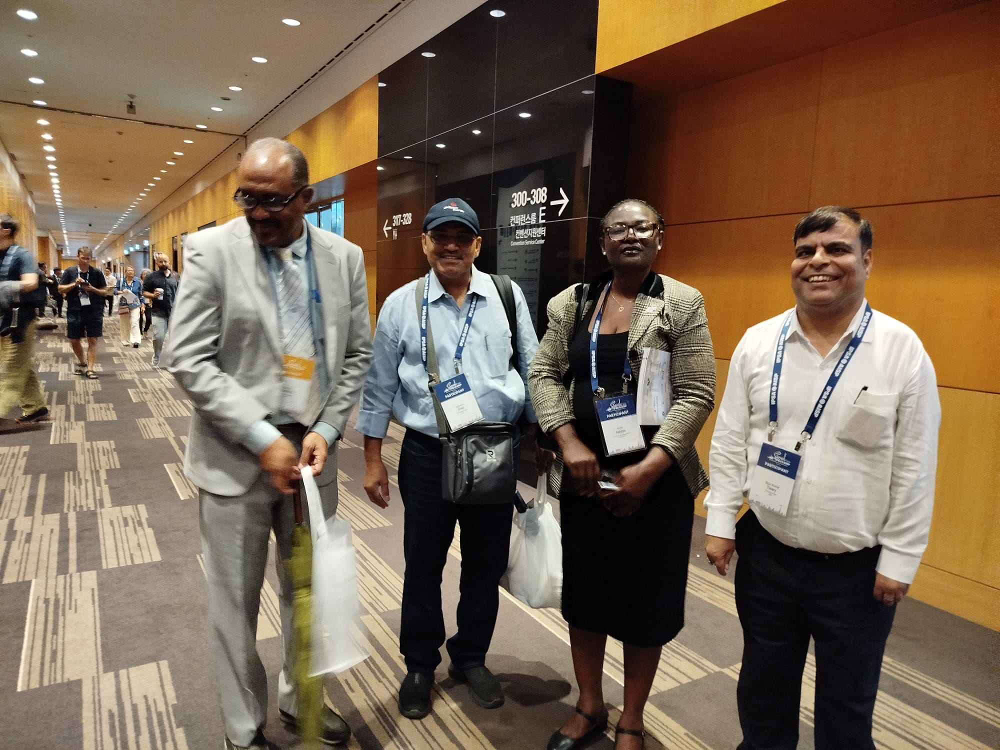
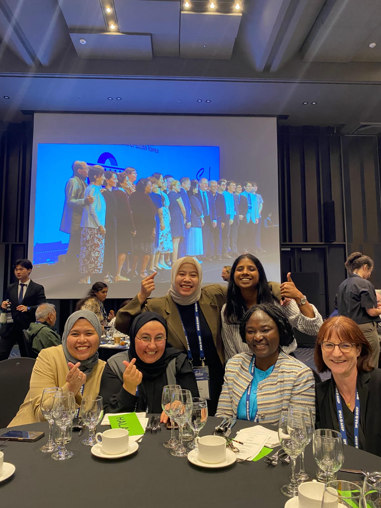
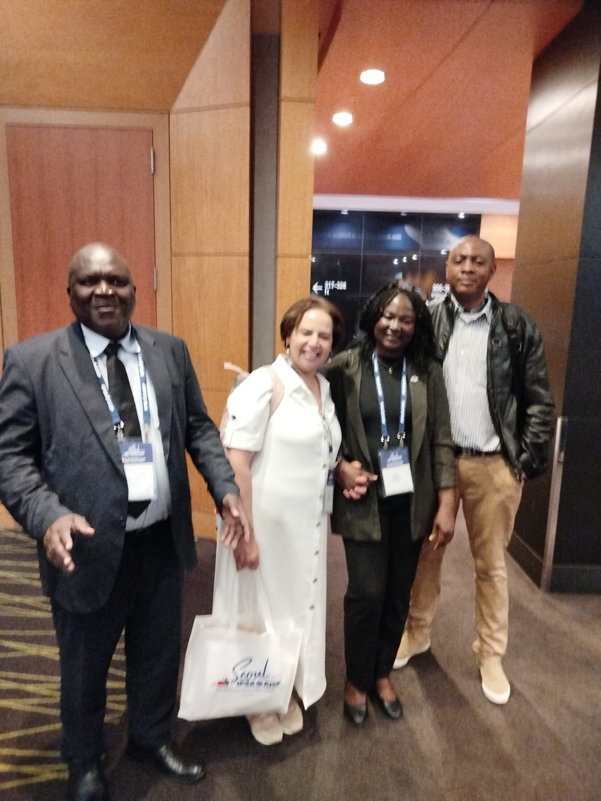

Aissa HALIDOU est une universitaire nigéro-allemande. Épidémiologiste, socio-économiste et politologue, elle a effectué ses études à l'Université des Sciences Appliquées de Hambourg (HAW) en Allemagne, d'où elle est diplômée en Santé Publique avec une spécialisation en Épidémiologie en 2007.
Elle est également titulaire d'un doctorat en socio-économie et politique (Dr. rer. pol.), obtenu à l'Université de Brême en 2012.
En 2020, elle est nommée Professeure au sein du Majeur Politique et Gouvernance et enseigne à Sciences Po Paris, au titre de la Chaire Alfred Grosser.
Elle a par ailleurs occupé plusieurs fonctions à l'international, tant dans le milieu académique que dans des organisations extra-académiques (voir ci-dessous pour le détail de son parcours).
Aissa HALIDOU ist eine nigerisch-deutsche Wissenschaftlerin. Als Epidemiologin, Sozioökonomin und Politologin absolvierte sie ihr Studium an der Hochschule für Angewandte Wissenschaften Hamburg (HAW) in Deutschland und schloss 2007 ein Studium der Public Health mit Schwerpunkt Epidemiologie ab.
Sie ist zudem Inhaberin eines Doktorgrades in Sozioökonomie und Politik (Dr. rer. pol.), den sie 2012 an der Universität Bremen erwarb.
Im Jahr 2020 wurde sie Professorin im Studienschwerpunkt Politik und Governance und lehrt an der Sciences Po Paris im Rahmen des Alfred-Grosser-Lehrstuhls.
Darüber hinaus hat sie international zahlreiche Positionen sowohl im akademischen als auch im außerakademischen Bereich innegehabt (Einzelheiten zu ihrem Werdegang siehe unten).
Aissa HALIDOU is a Nigerien-German academic. An epidemiologist, socio-economist and political scientist, she completed her studies at the Hamburg University of Applied Sciences (HAW) in Germany, graduating in Public Health with a specialization in Epidemiology in 2007.
She also holds a doctorate in socio-economics and politics (Dr. rer. pol.), obtained from the University of Bremen in 2012.
In 2020, she was appointed Professor within the Politics and Governance major and teaches at Sciences Po Paris under the Alfred Grosser Chair.
She has also held several international positions, both in academia and in non-academic organizations (see below for details of her career path).



